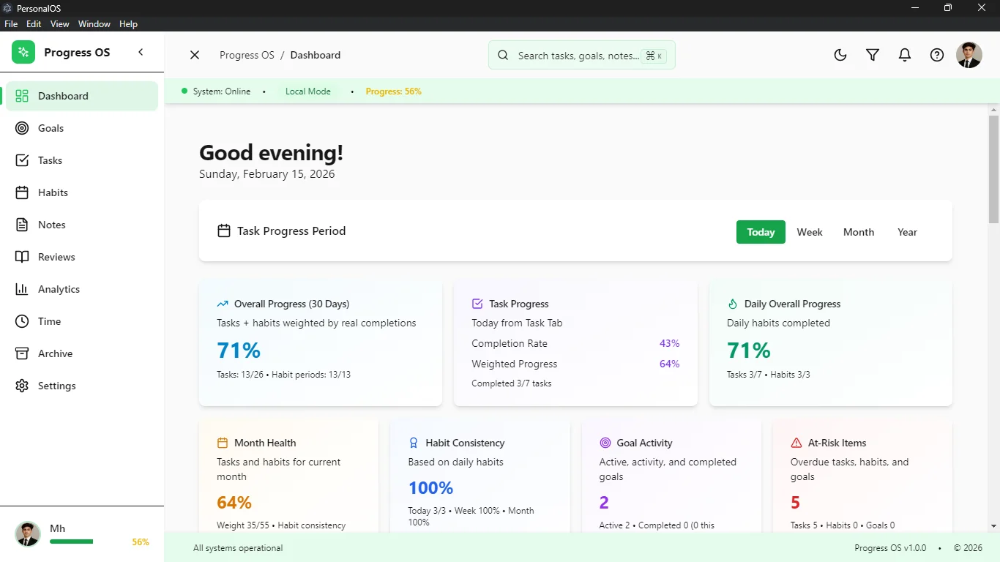
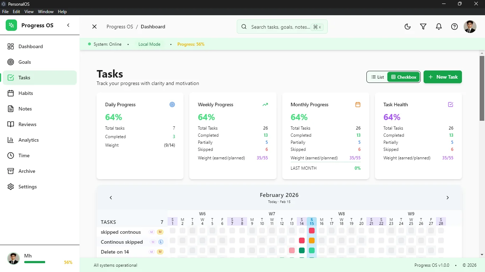
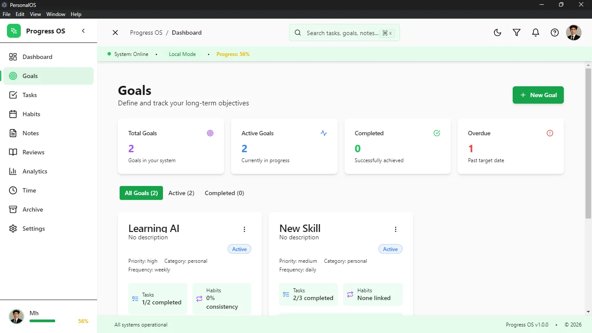
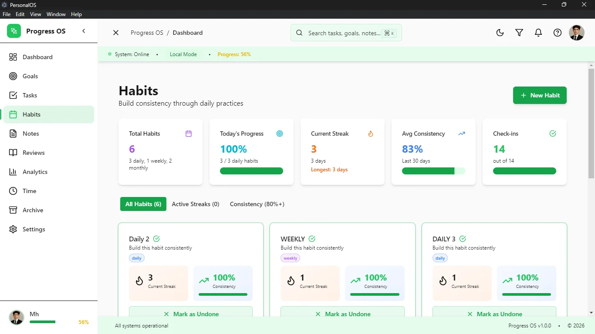
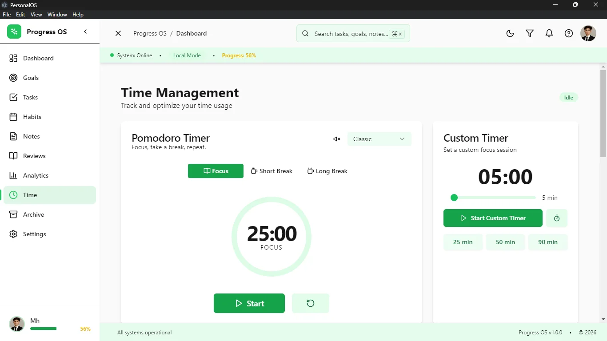
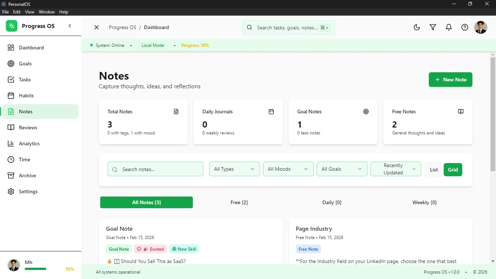
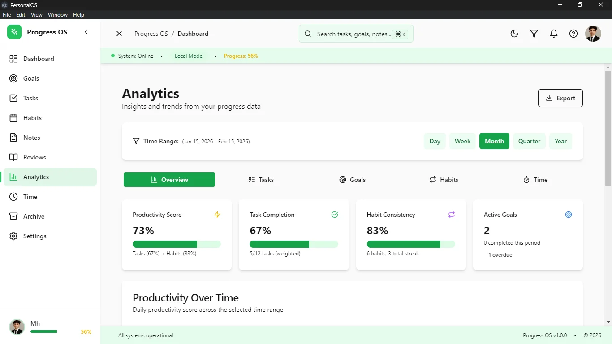
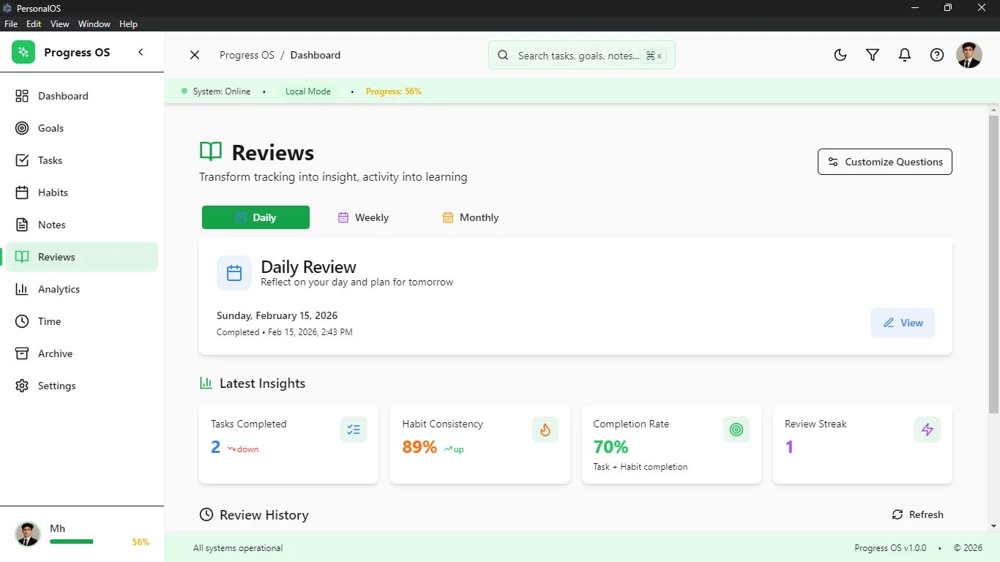
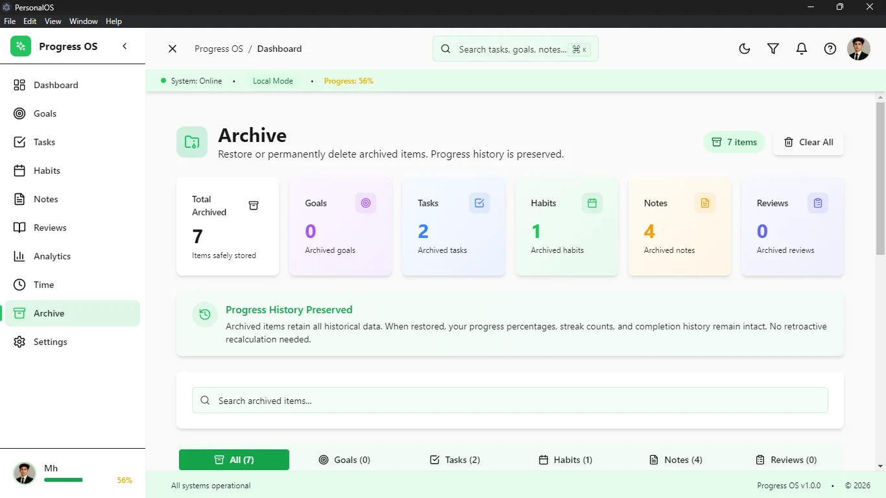

The Engineering Premise
Modern productivity software is inherently compromised by its reliance on the cloud. When the execution of a simple task update requires a round-trip to an AWS server, the user experiences latency, and the application introduces critical points of failure. Progress OS was conceptualized as a radical departure from SaaS fragility.
The goal was to engineer a monolithic desktop application that consolidates disparate workflow paradigms—task management, habit tracking, deep-work Pomodoro sessions, and analytical retrospectives—into a single, highly cohesive local environment. By prioritizing an offline-first architecture powered by a high-performance SQLite database, Progress OS guarantees absolute data privacy, zero-latency interactions, and complete immunity to network instability.
Architecting the Desktop Boundary
Building a modern desktop application with web technologies introduces profound security and structural challenges. Progress OS leverages the Electron framework but strictly adheres to advanced Context Isolation and secure Inter-Process Communication (IPC) paradigms.
The Node.js Main Process: Operating outside the browser sandbox, this process acts as the absolute authority of the system. It handles privileged filesystem access, orchestrates automated database backups, and executes raw SQL queries using the synchronous `better-sqlite3` library for maximum throughput.
The Isolated React Renderer: The UI is entirely sandboxed. It has no direct access to Node.js modules or the local file system. Instead, it relies on a highly typed, pre-defined set of API endpoints exposed via Electron's `contextBridge`.
Asynchronous IPC Bridges: When a user completes a task in the UI, the React layer dispatches an IPC message. The Main process receives this, executes an atomic SQLite transaction, and asynchronously returns the mutated state back to the renderer. This strict boundary ensures malicious scripts cannot traverse the UI to corrupt the local machine, while keeping the UI thread unblocked during heavy data operations.
Deep Dive: Module Architecture
Progress OS is not a single tool, but an ecosystem of interconnected domain modules. Each module features distinct data schemas but shares a unified design language and global state. Here is a comprehensive breakdown of the internal mechanics powering each page.
The Operations Dashboard (`dashboard.tsx`)
The Dashboard acts as the central nervous system. It does not store its own data; rather, it utilizes complex SQL joins in the Main process to aggregate a real-time snapshot of the day. It actively pulls active Pomodoro timers, impending habit deadlines, and the top-priority tasks of the day. The state is synchronized using TanStack Query, ensuring that changes made in isolated modules immediately reflect on the dashboard without manual refetching.

Advanced Task Engine (`tasks.tsx`)
Unlike simplistic to-do lists, the Task module implements a rigorous state machine for task lifecycles (Todo, In Progress, Blocked, Done). It supports dynamic priority sorting and infinite sub-task nesting.
The Daily Rollover Mechanic: A background cron-style function within the Node process detects when a day ends. It automatically executes a transaction to migrate incomplete tasks to the current day, recalculating their aging metadata. This prevents task abandonment and ensures the user is always confronted with their active backlog.

Strategic Goal Tracking (`goals.tsx`)
Goals are architected as high-level entity structures decoupled from daily tasks. They utilize relational foreign keys to link to specific milestones. The UI renders these relationships through sophisticated progress bars. As child milestones are marked complete, the SQLite trigger updates the parent Goal's completion percentage, seamlessly reflecting the macro-progress in the React view.

Frequency-Aware Habit Engine (`habits.tsx`)
Habit tracking requires complex temporal logic. The database does not simply store "completed"; it logs a timestamped completion event against a Habit ID. The Node backend uses SQL window functions to calculate current streaks, longest historical streaks, and a rolling 30-day consistency percentage.
The frontend visualizes this dense dataset using a GitHub-style activity heat map, allowing users to instantly identify micro-trends in their behavioral compliance.

Integrated Time Logging (`time.tsx`)
Focus requires boundaries. This module features a fully functional Pomodoro state machine that survives page navigation. If a user starts a timer and switches to the Notes tab, Zustand maintains the active timer state globally. Upon timer completion, the logged deep-work session is written directly to the database and hard-linked to a specific Task or Goal, completely preventing "lost time" and providing exact records of effort expenditure.

Knowledge Capture (`notes.tsx`)
A distraction-free, rich-text markdown environment for journaling and technical planning. The Notes module employs debounced IPC calls—as the user types, the React state updates instantly, but database writes are intelligently throttled to prevent I/O blocking, ensuring a silky-smooth typing experience even with massive documents.

Data Visualization (`analytics.tsx`)
The analytical brain of Progress OS. Utilizing the Recharts rendering library, this module digests raw SQLite temporal data into interactive, multi-range reports. It features custom hooks that query the backend for completion velocity over time, habit adherence trends across varying months, and time allocation matrices. It transforms a local database into a personal intelligence dashboard.

Retrospectives & Workflows (`reviews.tsx`)
This module programmatically generates weekly and monthly review templates based on the user's historical data. It pulls completed tasks from the Archive and unfulfilled habits from the tracking engine, forcing the user to engage in structured self-reflection. It's an engineered workflow designed to recalibrate focus.

Archive & Data Protection (`archive.tsx` & `backup.tsx`)
To prevent the active SQLite tables from slowing down over years of use, the Archive module acts as a historical ledger. Completed items are soft-deleted from active views and securely maintained here for long-term queries.
The Backup module is a critical infrastructure piece. It provides a UI to trigger Node.js filesystem operations that clone the SQLite database into a secure, timestamped directory, ensuring total protection against catastrophic data corruption or machine failure.

Configuration (`settings.tsx`)
A deeply customizable configuration hub controlling the entire application's behavior. From altering Pomodoro interval lengths to toggling a comprehensive system-wide Dark/Light theme (orchestrated seamlessly via Tailwind CSS class strategies), the settings module writes preferences to a dedicated local config file, persisting UX choices across application restarts.
Mastering State & UX Patterns
The user experience of Progress OS is dictated by speed. Achieving zero-latency perception requires aggressive Optimistic UI patterns. When a user clicks a checkbox, the React state updates instantly, providing immediate visual feedback. The IPC call to the database happens silently in the background. If the Node database transaction fails, a custom Undo/History stack automatically reverts the React state and displays an Error Boundary toast notification. This ensures the UI never lies to the user.
Furthermore, the application is designed for power-users. A globally accessible Command Palette (implemented via cmdk) allows users to summon a Spotlight-like search bar from anywhere in the app using a keyboard shortcut. This bypasses the mouse entirely, allowing for rapid task creation, module navigation, and timer initiation.
Data Integrity & Reliability Engineering
In a personal operating system, data loss represents a critical failure of trust. Progress OS implements robust reliability engineering:
- Atomic Transactions: All complex state mutations—such as cascading a goal's completion status down to its child milestones—are wrapped in atomic SQLite transactions. If one query fails, the entire transaction rolls back, preventing orphaned data structures.
- Graceful Degradation: If the renderer process encounters a fatal React error, customized Error Boundaries catch the exception, log the stack trace locally, and present a recovery UI instead of crashing the Electron window to a white screen.
- Strict Type Sharing: A shared `types.ts` directory sits between the Node backend and React frontend. This guarantees that the JSON payloads passing through the IPC bridge conform exactly to expected schemas, eliminating runtime `undefined` errors.
Conclusion & Architectural Impact
Progress OS is a testament to the immense power of local-first software architecture. By deliberately rejecting the complexities and latencies of cloud-dependent infrastructures, the project achieves unparalleled speed, absolute data ownership, and a fiercely focused user experience.
The fusion of Electron's native capabilities with the declarative power of React 18 and the unyielding reliability of SQLite proves that web technologies, when architected with extreme discipline, can produce desktop applications that rival or exceed the performance of native binaries. Progress OS stands as a fully realized, enterprise-grade operating system for the mind.